Making ORIG say “published”
Made in the app the way a scheduler would, on the demo week: Monday published as the Original with one change already waiting (so ORIG sits beside “Not yet signed”, the busiest it gets). For the four drawings of A, Tuesday is amended to AL3 (green) and Wednesday to AL4 (white), the two AL colours it must stay clear of; for the first three options lower down, Tuesday is at AL1 and Wednesday a draft. Each option is the same screen with the change laid on top; nothing in the app was changed. The pictures are at their real size on each screen.
the first draft
A bright outline and a typed tick.
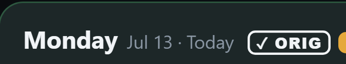
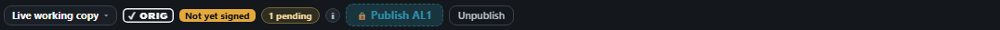
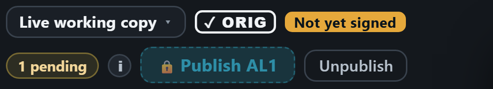

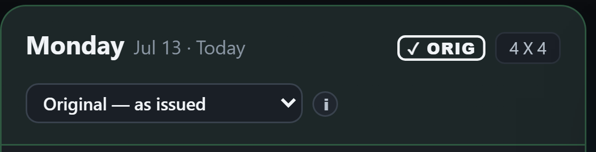
seal
A faint white wash, a thin outline, and a drawn tick in a white disc.
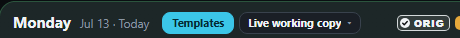
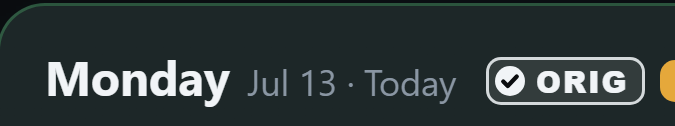
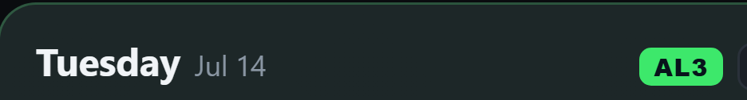
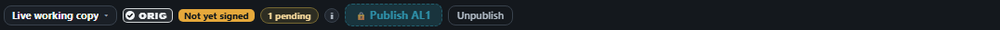
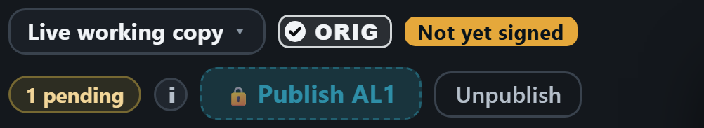
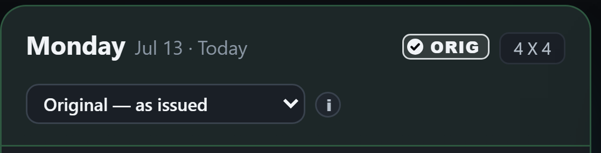
check-cap
The tick sits in a solid white end-cap and the rest is outlined, like a “verified” badge.
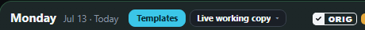
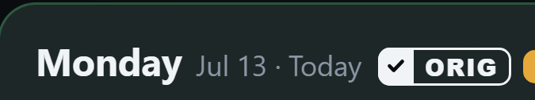
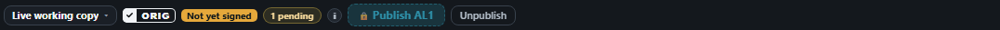
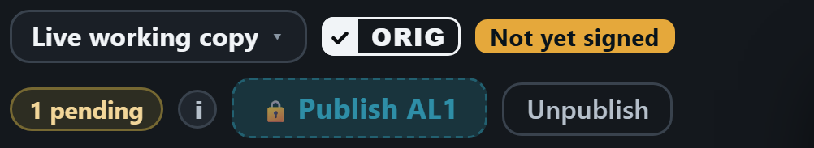
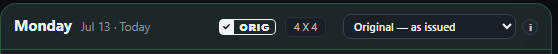
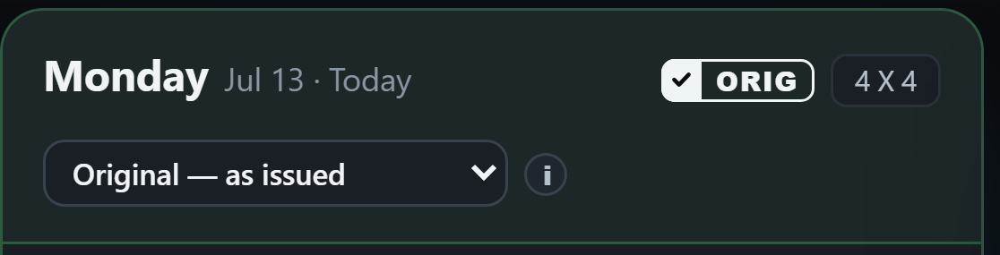
round seal
A1 in a fully round shape.
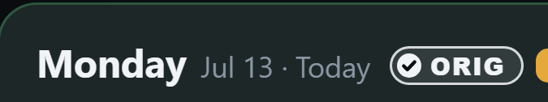
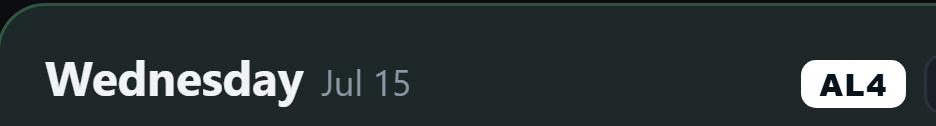
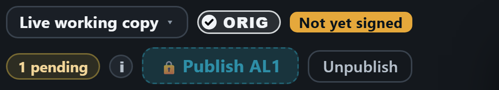
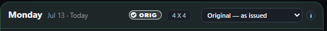
A, A1, A2 or A3? My recommendation: A2, the check-cap. The solid white end-cap makes it stand out as much as a coloured AL tag, the tick says “published”, and no button in the app has that shape — A1 and A3 are outlines like the buttons and the “1 pending” pill beside them. It stays clear of AL4: AL4 is a solid white block with no tick.
Below: the first three options, and the check against AL3’s green that ruled B out.
The grey ORIG
Beside the coloured AL tags and the dashed DRAFT, the grey reads as “not done yet”.
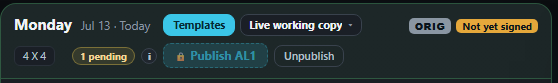
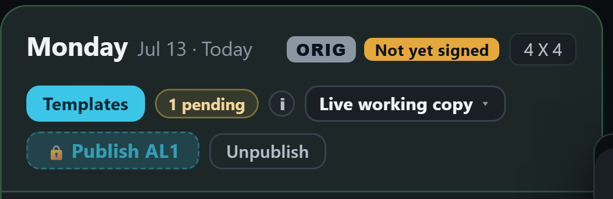
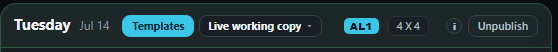
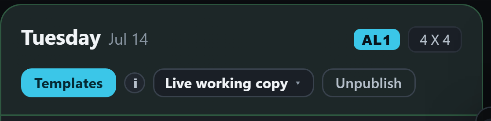
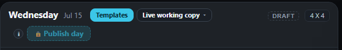
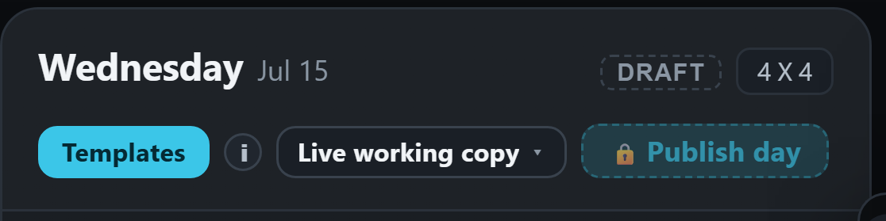
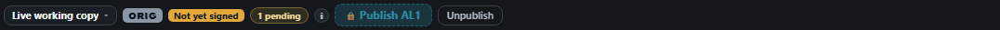
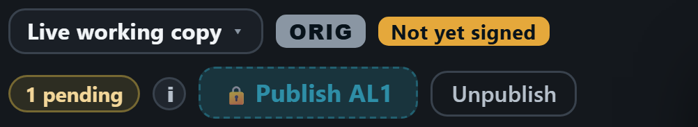
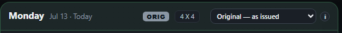
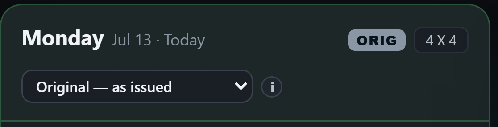
A ticked outline: “✓ ORIG”
A bright outline and a tick, no fill. It reads as a stamp, a shape no other tag has, and with no colour it cannot be mistaken for an amendment’s colour.
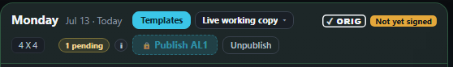
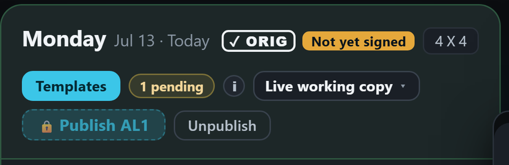


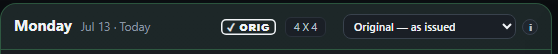

The AL tags and the DRAFT tag stay as they are.
A ticked green: “✓ ORIG”
Filled in the green the app already uses for “signed” (the sign-off line turns this green once all four have signed). The loudest of the three.
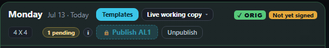
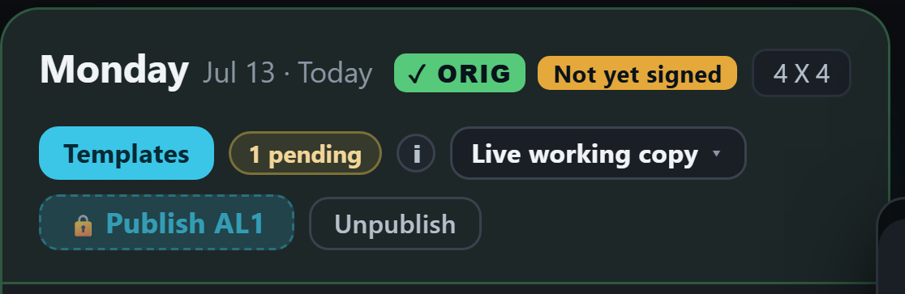
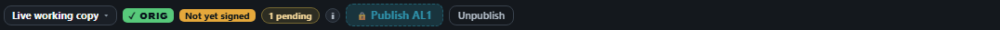
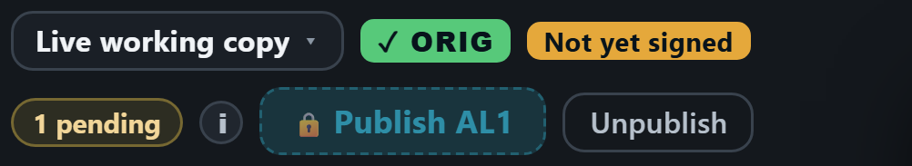
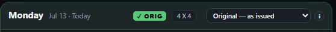
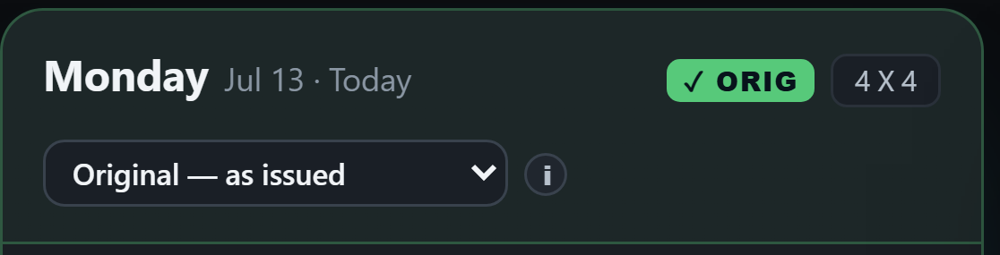
AL3’s tag is also green, a brighter one. The words (“✓ ORIG” against “AL3”) keep them apart, and the Original never paints marks on the schedule, so AL3’s marks stay the only green ones.
The word: “● Published” before the tag
Every published day says “Published” before its tag, the Original and every amendment alike. The tags themselves stay as they are.
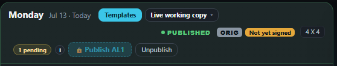
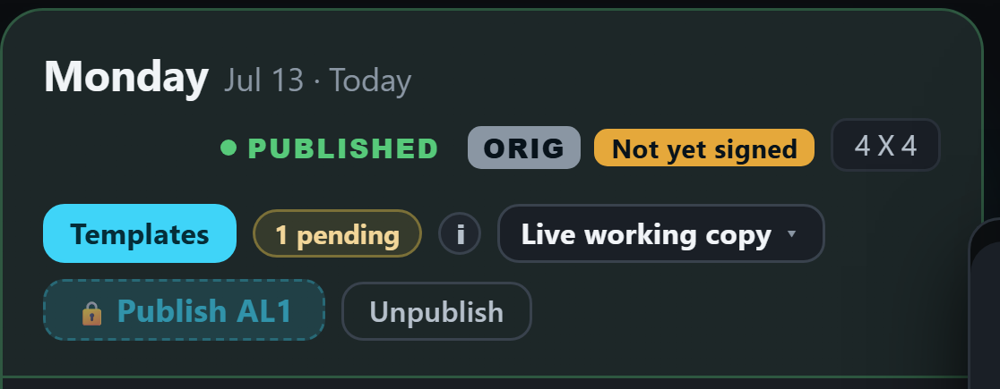
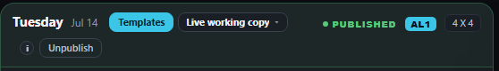
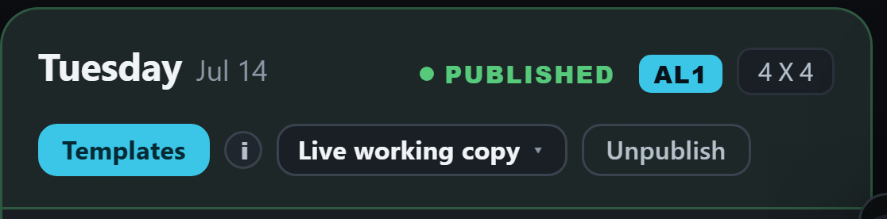
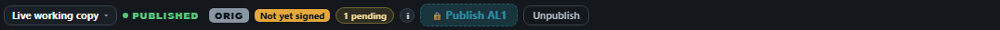
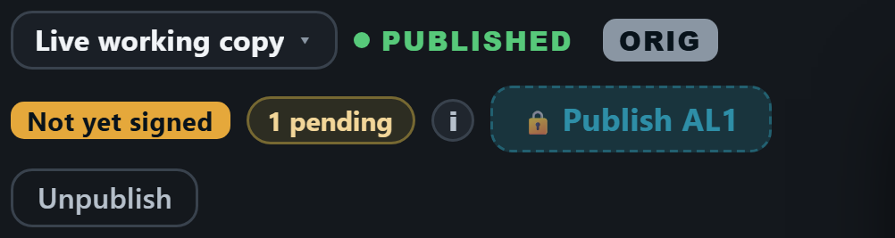
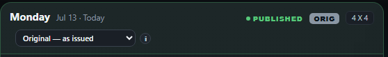
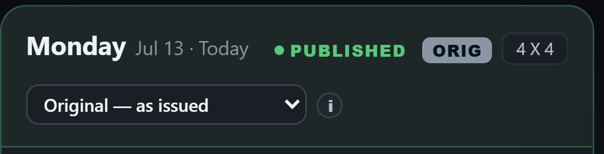
The cost: the extra word pushes the edit week’s day head onto a third row on a desktop, and the board’s strip onto a third row on a phone, on every published day.
Would people confuse the ORIG green with an AL green?
The same week with Tuesday amended to AL3 (green) and Wednesday to AL4 (white), the two AL colours ORIG could be taken for. Real size.
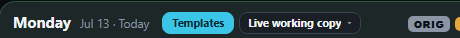
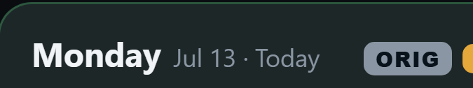
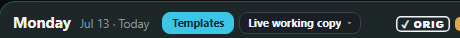
B beside AL3: both read as a green tag at a glance, so yes, the risk is real. A beside AL4: a solid white block against an outline with a tick.
Your answer to the three: A, “but is there a nicer design” — so B and C are out, and the four drawings of A are at the top of this page.